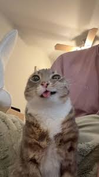

Nikhil Kyadiggeri
Junior at CCA
About Me
I was born in India and I am 16 years old. I currently live in San Diego and attend school at CCA. I like taking classes about computer science and engineering, and will most likely major in one of those fields. In my free time, I like to play video games, read, and hang out with my friends. My favorite food is either mac and cheese or tiramisu. I am a professional procrastinator.
My favorite animal
I don’t have a pet right now, but if I could have one, it would be a cat. Cats are just really awesome overall. They’re super easy to take care of, since they don’t need to be walked and stay indoors. They don’t do a whole lot, but they like to just chill with their owners. It’s great to just sit down and relax with a cat.
My favorite movie

My favorite movie that I’ve ever seen is Interstellar. It’s about a pilot who journeys through space to save humanity. I love the cinematic shots, as a lot of the movie shows very unique visuals and settings. There’s lots of big scientific concepts going on that can be mind-boggling, but once you understand them the movie is very interesting. The movie shows how strong love can be.